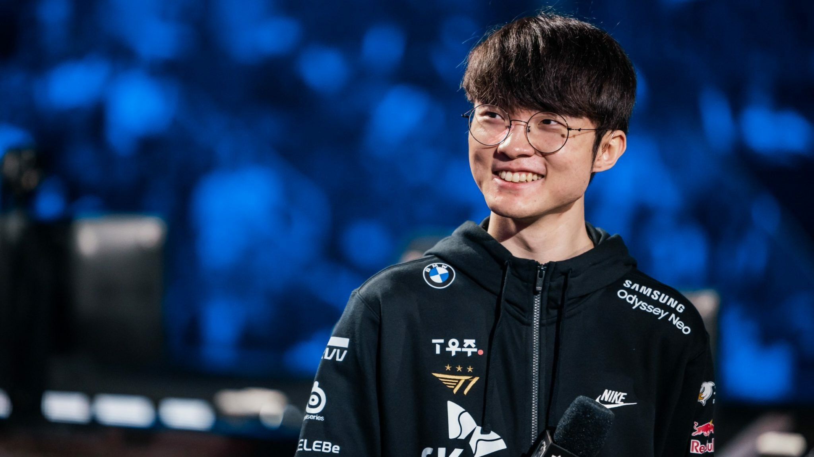

Faker
The Demon God King

Lee "Faker" Sang-hyeok (Hangul: 이상혁) is a League of Legends esports player, currently mid laner and part owner at T1.
Faker' achievements
- Dubbed the "Unkillable Demon King" by Cool, which has become a widely used title for him.
- Is highly regarded for his LeBlanc play during an OGN Spring match against MVP Blue; he went 10-0-1 by 18 minutes and made MVP Blue surrender at 20 minutes.
- Solo-killed Ambition's Kha'Zix during his debut in OGN. At the time Ambition was considered as one of the best mid laners in Korea.
- Was undefeated on LeBlanc until the 2015 Mid-Season Invitational final against EDward Gaming, where he lost with LeBlanc in Game 5.
- He is considered the best League of Legends player in the world by many esports journalists and pro players such as Thorin, Alex Ich, and Maknoon who called him the "Lionel Messi of League of Legends".
- Dustin Beck, the vice president of Riot Games, said Faker is the "Michael Jordan" of League of Legends in a press conference at Staples Center.
- In the first game of the 2013 OGN summer championships Faker played Ahri and scored a GPM of 492.
- With 10 LCK titles, he is the player with the most LCK titles in entire LCK's history, from the first in Summer 2013 to the tenth in Spring 2022.
Click here for more information about Faker.